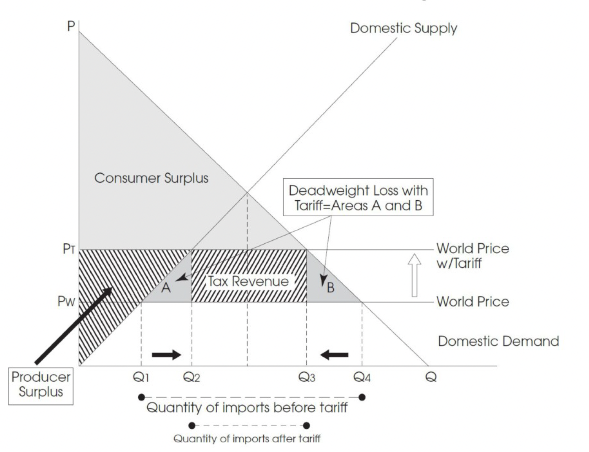

International Trade and Public Policy¶
The government can use tariff and quota to influence the domestic market:
To protect domestic producers from a cheaper world price;
To prevent domestic unemployment;
To reduce reliance on other countries.
World Price without Tariff or Quota¶
- World price
Countries can buy products at their own domestic price or they can buy the products at a cheaper world price.
- Tariff
Tax on imports that increases the world price.
- Quota
Limit on number of imports.
The figure below shows how the international trade effects the domestic market. Due to world trade, the domestic demand can be met at a low price (2 dollars). The table below shows the differences between before and after.
Before World Trade |
After Trade at World Price |
|
|---|---|---|
Equilibrium Price ($) |
4 |
6 |
Equilibrium Quantity |
40 |
60 |
Consumer Surplus |
A |
ABDE |
Producer Surplus |
BC |
C |
Total Surplus |
ABC |
ABCDE |
Quantity of Imports |
- |
40 |
Net Gains from Trade |
- |
DE |
World Price with a Tariff¶
If the government imposes a tariff on imports, the import price will be increased from to . The deadweight loss will be the area of A and B.
